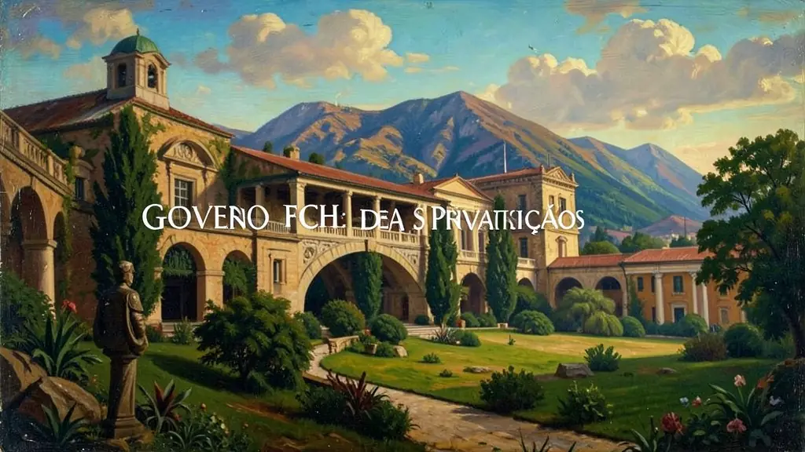
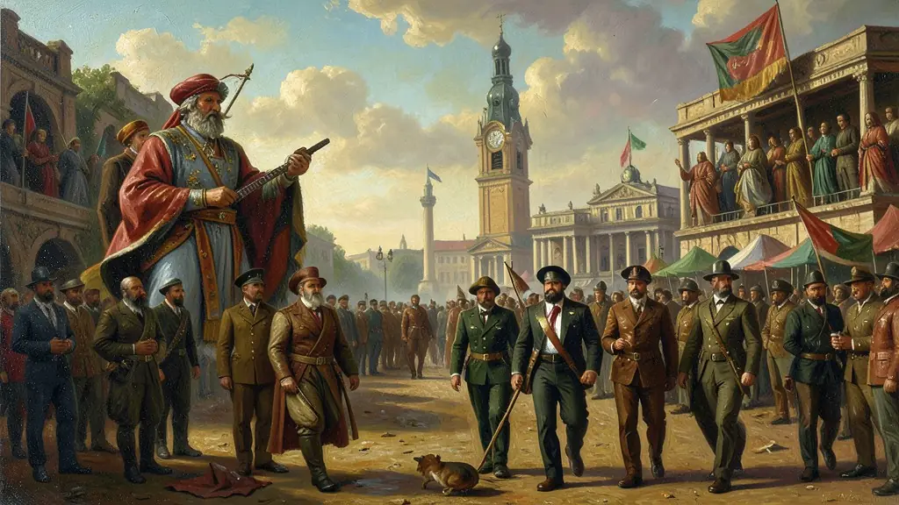

Capítulo 01
1. Privatizações: Do Estado para o Mercado
A venda da Vale e da Telebras mudou o cotidiano brasileiro. Antes, uma linha telefônica custava milhares de dólares e era declarada no imposto de renda; após a privatização, o acesso ao telefone se popularizou. Porém, os críticos diziam que o governo estava vendendo o 'patrimônio nacional' a preços de banana para estrangeiros. O conflito entre nacionalismo e privatismo dominou os debates políticos da década de 90.

Capítulo 02
2. Lei de Responsabilidade Fiscal (2000)
A LRF foi a vacina contra os políticos que gastavam o que não tinham para ganhar eleições. Pela primeira vez, se um governante fizesse dívidas impagáveis, ele poderia responder criminalmente. Essa lei garantiu que o Brasil fosse visto pelo mundo como um país sério e organizado, diminuindo o 'Risco Brasil' e permitindo que o país recebesse novos empréstimos internacionais para hospitais e escolas.

Capítulo 03
3. Saúde: Genéricos e a Luta contra o HIV
O ministro da saúde de FHC, José Serra, enfrentou as grandes farmacêuticas mundiais para criar a **Lei dos Genéricos**. O Brasil passou a fabricar remédios idênticos aos de marca a preços populares. O país também se tornou referência mundial no tratamento gratuito contra a AIDS, quebrando patentes em nome do direito à vida. Foi o momento em que a ciência brasileira provou que podia ser eficiente no serviço social.
Capítulo 04
4. O Custo da Estabilidade: O Apagão de 2001
A falta de investimentos em novas usinas hidroelétricas, somada a uma seca severa, levou o Brasil ao racionamento de energia em 2001. O povo foi obrigado a apagar luzes e desligar geladeiras sob pena de multas pesadas. O 'Apagão' foi o golpe fatal na imagem de eficiência do governo FHC, mostrando que a estabilidade do Real não era suficiente se a infraestrutura básica do país estivesse esquecida.
Capítulo 05
5. O Fim da Era FHC: Saldo e Transição
FHC entregou um Brasil estável, mas com um desemprego ainda alto e dívida externa crescente. Ele garantiu uma transição democrática exemplar para Lula em 2002, algo raro na história da América Latina. Seu legado é uma estrutura de governo profissional (as Agências Reguladoras) e uma macroeconomia sólida, que permitiu que os sucessores pudessem focar mais no social sem o medo da inflação galopante.
O governo de Fernando Henrique Cardoso (1995-2002) teve como pilar fundamental a consolidação da estabilidade econômica através do Plano Real, iniciado ainda no final do governo Itamar Franco. Para debelar a inflação crônica, o governo adotou medidas neoliberais baseadas no 'tripé macroeconômico' (metas de inflação, câmbio flutuante e responsabilidade fiscal). Esse período foi marcado por um intenso processo de desestatização, com a venda de empresas estratégicas como a Vale do Rio Doce e as telecomunicações, visando reduzir a dívida pública e atrair investimentos estrangeiros.
Na esfera social, o governo FHC implementou programas de transferência de renda focalizados, como o Bolsa Escola e o Vale Gás, embora tenha enfrentado críticas pelos altos níveis de desemprego e pela desigualdade persistente. Politicamente, a aprovação da emenda da Reeleição em 1997 foi um dos momentos mais controversos de sua gestão, permitindo-lhe um segundo mandato. A modernização do Estado brasileiro sob FHC buscava a inserção do país na globalização, mas as crises externas (México, Ásia, Rússia) revelaram a vulnerabilidade da economia nacional aos fluxos financeiros internacionais.
Para o Enem, o estudo das 'Era FHC' é essencial para compreender a construção do Brasil contemporâneo após décadas de hiperinflação. É importante analisar o impacto das privatizações nos serviços públicos e a introdução da Lei de Responsabilidade Fiscal como marco de gestão administrativa. A transição democrática consolidada sob sua liderança provou a maturidade das instituições brasileiras, preparando o terreno para as políticas de expansão de consumo e inclusão social que caracterizariam a década seguinte.
Fonte: SCHWARCZ, Lilia M.; STARLING, Heloisa M. Brasil: Uma Biografia. São Paulo: Companhia das Letras, 2015.
Atividades interativas
Questões para fixar
A Lei de Responsabilidade Fiscal (2000), sancionada no governo FHC, teve como principal objetivo:
O programa de privatizações nos anos 90, liderado por FHC, baseava-se em qual diretriz econômica global?
Qual foi o principal objetivo do programa de Privatizações implementado durante a gestão de Fernando Henrique Cardoso?
Qual foi o papel da Lei de Responsabilidade Fiscal (LRF) na gestão de Fernando Henrique Cardoso?
Qual foi o nome do programa social de transferência de renda iniciado durante a gestão de Fernando Henrique Cardoso?